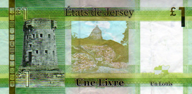

S'lon l'diton, nou n'peut pon enrichi un publyi. Mais i' sembl'ye qu'ch'est pôssibl'ye d'appaûvri les gens atout l'mêché et les maûfaits du système bantchi. Et pouor la dèrnié ridgeu, les cheins tch'ont 'té s'posés d'tâsser nos hèrpîns sont, hélas, dans la bliâse et souos l'fou ou à tchiquechose près.
Les raisons pouor la crise du crédit ou, s'ou l'voulez, la squouîze du crédit n'sont pon aîsies à comprendre. Nan, v'là tch'est touot cliai coumme d'la baue dêtrempée. À ches drein, j'ai 'té à tâchi d'comprendre ch't' êlouaîssithie quantitative qu'des banques centrales sont à entréprendre ès Êtats Unnis pouor lé dollar, au Rouoyaume Unni pouor lé louis et dans l'Unnion Ûropéenne pouor l'ûro. Assa, i' semb'lye qu'ch'est eune manniéthe d'împrînm'thie d'billes sans împrînmer ni distribuer des billes - l'idée est d'êlouaîssi les contrôles sus les rêsèrves finnanciéthes en acatant des dettes pouor faithe cirtchuler l'crédit dêliêment.
Y'en a tchi dithent qu'ch'est ristchabl'ye touot coumme, car v'là tchi pouôrrait êtibotchi l'înfliâtion et au run d'êlouaîssi les contrôles sus l'amas monnétaithe, mus vaudrait faithe des êlaîzes et couoyer. Y'a don du hèrtchîn entre les deux bords - les cheins tchi veulent emprunter à seule fîn d'dêpenser et les cheins tchi veulent coper les budgets et mênagi les r'ssources. L'împortant, qu'j'înmaginne, ch'est d'saver quand tchi r'nonchi à êlouaîssi, car autrément nou-s'est à mett' san pid sus un êcrîlias sans pouver s'arrêter d'vant tchaie à bouôn'-tchu.
Si l'êlouaîssithie quantitative est un ôti êcononmique, ch'est qu'i' n'faut pon qu'ou sé d'semmanche. Janmais mauvais ouvriyi n'trouvit bouon ôti, et y'en étha par mouochieaux à bliaûmer ch't' êlouaîssithie si l's affaithes finnissent par êt' êloqu'tées.
Un ôti tch'est d'semmanchi est eune cliouque-au-manche. Quand un ôti clianque au manche, il a d'l'âge - et nou l'dit d'eune pèrsonne étout. Ch'est à vaie si ch'est qu'nos idées êcononmiques clianquent au manche ou si ch'est l's împrînm'thies d'billes ès banques centrales tchi lus en vont cliantchi au manche par l'us'sie d'la machinn'nie.
Tout coumme, j'ai assez êlouaîssi ma langue pouor en dêclianqu'ter des sottises. Mais v'là tch'a enrichi les rêsèrves lexiques du Jèrriais en l's êlouaîssithant quantitativement.
Geraint Jennings
Viyiz étout: